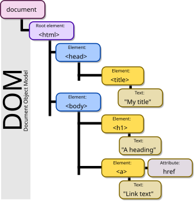

<!DOCTYPE html>
<html lang="en">
 <head>
 <meta charset="UTF-8">
<meta name="viewport" content="width=device-width, initial-scale=1.0">
    <title>The HTML Foundation II</title>
 </head>
    <body>
        <header>

            <h1>RONNIEL P. REGLOS</h1>

            
                <nav>
                    <ul>
                        <li><a href="index.html">HOME</a></li>
                        <li><a href="blog-one.html">BLOG 1</a></li>
                        <li><a href="blog-two.html">BLOG 2</a></li>
                        <li><a href="blog-three.html">BLOG 3</a></li>
                    </ul>
                </nav>
        </header>
        <article>
            <header>

                <h2>What is JavaScript? </h2>
                <p>Posted by <strong>RONNIEL REGLOS</strong></p>

            </header>
            
                    <p><strong>JavaScript</strong> often abbreviated as <strong>JS</strong>, is a <i>programming language</i> and core technology of the World Wide 
                    Web, alongside <strong>HTML</strong> and <strong>CSS</strong>. 99% of websites use JavaScript on the client side for webpage behavior,
                    often incorporating third-party libraries. All major web browsers have a dedicated JavaScript engine to 
                    execute the code on users' devices.</p>

                    <p><strong>JavaScript</strong> is a high-level, often just-in-time compiled language that conforms to the <strong><a href="https://vi.wikipedia.org/wiki/ECMAScript" target="_blank"> ECMAScript</a></strong> 
                    standard. It has dynamic typing, prototype-based object-orientation, and first-class functions. It is multiparadigm, supporting event-driven, functional, and imperative programming styles. It has application 
                    programming interfaces (APIs) for working with text, dates, regular expressions, standard data 
                    structures, and the <a href="https://www.w3schools.com/js/js_htmldom.asp" target="_blank">Document Object Model (DOM).</a></p>

                    

                    <p>The <strong><a href="https://vi.wikipedia.org/wiki/ECMAScript" target="_blank">ECMAScript</a> standard</strong> does not include any input/output (I/O), such as networking, storage, or 
                    graphics facilities. In practice, the web browser or other runtime system provides JavaScript APIs for I/O.</p>

                    <p><strong>JavaScript engines</strong> were originally used only in web browsers, but are now core components of some 
                    servers and a variety of applications. The most popular runtime system for this usage is <strong>Node.js.</strong></p>

                    <p>Although Java and JavaScript are similar in name, syntax, and respective standard libraries, the two 
                    languages are distinct and differ greatly in design.</p>

                <h3>Website Client-side Usage</h3>

                    <p>JavaScript is the dominant client-side scripting language of the Web, with 99% of all websites using it for 
                    this purpose.[10] Scripts are embedded in or included from HTML documents and interact with the 
                    <a href="https://www.w3schools.com/js/js_htmldom.asp" target="_blank"> DOM</a> </p>

                    <p>All major web browsers have a built-in JavaScript engine that executes the code on the user's device.</p>

                <h3>Examples of Scripted Behavior</h3>

            
                    <ul>
                        <li>Loading new web page content without reloading the page, via Ajax or a WebSocket. For 
                        example, users of social media can send and receive messages without leaving the current page.</li>
                        <li>Web page animations, such as fading objects in and out, resizing, and moving them.</li>
                        <li>Playing browser games.</li>
                        <li>Controlling the playback of streaming media.</li>
                        <li>Generating pop-up ads or alert boxes.</li>
                        <li>Validating input values of a web form before the data is sent to a web server.</li>
                        <li>Logging data about the user's behavior then sending it to a server. The website owner can use 
                        this data for analytics, ad tracking, and personalization.</li>
                        <li>Redirecting a user to another page.</li>
                        <li>Storing and retrieving data on the user's device, via the storage or IndexedDB standards.</li>
                    </ul

    
                </p>
                <h3>Web Libraries and Frameworks</h3>

                        <p><strong>React</strong> (also known as React.js or ReactJS) is a free and open-source front-end JavaScript library for 
                        building user interfaces based on components. It is maintained by Meta (formerly Facebook) and a 
                        community of individual developers and companies.</p>
                        <p><strong>React</strong> can be used to develop single-page, mobile, or server-rendered applications with frameworks like 
                        <strong>Next.js.</strong> Because React is only concerned with the user interface and rendering components to the DOM, 
                        React applications often rely on libraries for routing and other client-side functionality. A key advantage 
                        of React is that it only rerenders those parts of the page that have changed, avoiding unnecessary 
                        rerendering of unchanged DOM elements.</p><br>

                <h3>Angular</h3>

                        <p><strong>Angular</strong> (also referred to as "Angular 2+") is a <strong>TypeScript-based,</strong> free and open-source single-page web 
                        application framework led by the Angular Team at Google and by a community of individuals and 
                        corporations. Angular is a complete rewrite from the same team that built <strong>AngularJS.</strong></p><br>

                <h3>jQuery</h3>

                        <p>In 2012, <strong>jQuery</strong> was by far the most popular client-side library, used by over 75% of websites. While still 
                        in widespread use, its popularity has been surpassed by newer libraries and frameworks</p><br>

                <h3>Vanilla JS</h3>

                        <p>The framework-like moniker <strong>"Vanilla JS"</strong> is term that has been coined for websites not using any libraries 
                        or frameworks at all, instead relying entirely on standard JavaScript functionality.</p><br>

                
                    <p>You can learn more at <a href="https://www.w3schools.com/" target="_blank">W3School</a></p>

                <h3>Why should you learn JavaScript?</h3>
                    <p>Learning JavaScript is important for several reasons:</p>
                    <ul>
                         <li>Foundation of Web Development</li>
                         <li>Fundamental Skill of a Web Developer</li>
                         <li>Create and customize content on the Web</li>
                         <li>Career Opportunities</li>
                         <li>Business Solutions</li>
                    </ul>
                        <p>By doing a lot of practice, you will definitely experience errors and bugs in your code, but don't 
                        worry, you will overcome them all!</p>
                <h3>Subscribe to Our Newsletter</h3>
                <form>
                    <input type="email" name="email" placeholder="Your Email Address" required>
                    <input type="submit" value="Subscribe">
                </form>
        </article>
    <aside>
        <h4>Related posts</h4>
            <ul>
                
                 <li><h4><a href="blog-one.html">What is CSS?</a> </h4>
                 <p>By Ronniel Reglos</p></li>


                 
                 <li><h4><a herf="blog-two.html"> What is Javascript?</a> </h4>
                 <p>By Ronniel Reglos</p></li>


                
                 <li><h4><a herf="blog-three.html"> What is a Web Framework?</a></h4>
                 <p>By Ronniel Reglos</p></li>
            </ul>
    </aside>
 <footer>Copyright &copy; 2030 by RONNIEL REGLOS All Rights Reserved.</footer>
 </body>
</html>
